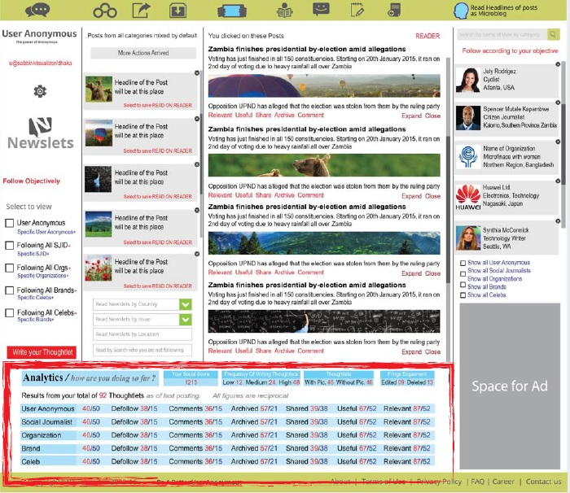

As an user under Brand category, you have plenty of opportunities to avail from this Platform. Newslets is designed to facilitate maximum distribution of contents for free. If you want to benefit your business or as Freelancer or as Professional, what you need most is constant flow of quality contents. You should be visible, stand alone, your voice must be clear and crisp. You must show your true color with utmost simplicity and truthfulness.
If you are a small local business, you can use your account to follow local customers and turn them in to regular loyal customers. You can build lasting personal relationships on the basis of your products, offers, customer services. You have the opportunity to use the account as your website, as your "dedicated marketing unit". Achieve more just by being creative.
For larger Brands, Newslets offers great scope to become small at local levels. Beauty of Newslets is in its localized communication model. You can tailor your communication location by location. Each account turns out to be a natural melting pot of diversified customers represented by user categories. You know your leads just being at the center of your Following and Followers.You can manifest your Brand broken down to local levels.
Freelancers and Professionals who are taken as Business entity as persons, also have same level of opportunities as regular businesses and brands. Develop a careful Following objectively from the wide diversity of users. Accrue huge number of Followers through inspiring memorable contents related to your area of expertise. Over the time, you will have sufficient clients for business based on relationships and social understanding.
Who is a better user ?
A better user is who uses the account for personal gains, achieves own objectives at 100%. A better user also offers social benefits to Followers and Following. Why they must follow you, any why "you" must Follow them ? After all harnessing each others social offers are the objectives of this social relationships.
How to become a better user ?
Newslets contains many tools and avenues through which a user can benefit from. Newslets is Users' paradise. No social media is configured to send your contents or posts or updates to the the people you are "Following". You are always unjustly encouraged to follow but there is no reciprocal gains. Why follow someone if he/she does not receive your contents/posts ? Your job is only to read and see what trash they are sending at your News Feed and Timeline. Newslets discarded that practice because it is unethical, not democratic, against the spirit of Freedom of Speech. On the other hand, at an average 3% of your Followers see your Posts. Is that what you should get by providing free Contents to social media ?
Like, this Post Flow Model of Newslets. This is the ultimate distribution model of Contents and Post which no other social media can emulate. Your contents/posts are distributed free of charge, without "post boost" without discrimination, without asking for "premium" to 100% of your Following and 100% of your Followers alike. This is where you can get results of your efforts without paying for it. Quality of your contents/posts and carefully nurtured list of Following and Followers are your best currency.
Distribution of Users generated Contents is organic, unrestricted, unconditional, not-paid for.
Post Flow Model is uniquely designed to benefit users across all categories as equal opportunity so that any user is powered to provide benefits to all and at the same time receives social benefits from all Following and Followers. Whatever you have to say must reach the intended receivers without restrictions of "Premium" or "pay more to reach more receivers" model of usual Social Media.
Based on this Post Flow Model, you can do following activities to gain more benefits from the time and efforts you put in to your Newslets account :
-
Increase number of Following :
Whenever you make a Follow Move on any user of any category, that move is Accepted by Default. If you think the other user will be a source of benefits to you, follow objectively. You can make Follow move from following points :- 4th Column of your Dashboard where platform sends Feeds of Intro of new signed up users. Here you can even select Feeds from selective categories. You should Select and follow users from all categories, mostly from local locations who are your immediate interests. Then you can expand your size of horizon as you prepare to put more time in to relations to get more benefits from more and more Following and Followers.
-
Content or Post Reader Page contains a Follow button by the side of Content Creator's Identification. Following are the
ways you can reach to those Pages :
> Content and posts Feed Column (2nd column of your dashboard). Click to save the content/post on READER at 3rd column. Click on EXPAND to view the Content/Post. Make a Follow move if you find the originator of the content is of quality (judge from the quality of content). Follow only when you think this user may serve your purpose of following.
You have the options to change Feeds of 2nd Column. Selectors Tabs are at the 1st Column which once selected by Category, Feeds changes according to your wishes.
> Microblog of Headline Icon at the Menu Bar of Dashboard. Click on the Head Icon, Select any Headline to Expand.
Follow from the Page View.
at the Menu Bar of Dashboard. Click on the Head Icon, Select any Headline to Expand.
Follow from the Page View.
> Trending Icons at the Menu Bar of Dashboard. These Icons represent category wise content/post
creators who are good at producing quality contents/posts which received good amount of Engagements from their
Following and Followers.
at the Menu Bar of Dashboard. These Icons represent category wise content/post
creators who are good at producing quality contents/posts which received good amount of Engagements from their
Following and Followers.
-
Increase number of Followers. While you are increasing Following by virtue of your objectives, which are at your will; you need to create a baseline of Followers which are not at your will or wishes or objectives. You are subject to evaluations by other users at the Platform. You are being evaluated on the basis of your contents/messages, what you are for, your presence is the answer to someone's requirements.
As you are aware that whatever you write as a Post, the Platform distributes it to all of your Following and all of your Followers without qualitative judgement. It means you are the master of quality of your posts. Growth of Follower baseline completely depends upon quality of your contents/messages. This is how and where your Followers happen to find you :
- When anyone from your Following Shares one of your Post, it goes to varieties of users other than your regular loop. Your Post can generate Followers from this channel. Quality of your Post works for the growth of Followers.
- When any of your Post gets sufficient Engagements from your existing Following and Followers, it becomes qualified to be included in #Trending flow for a certain time. Your Post flows to huge pool of users from various categories. You enter in to a potential source of growing Followers.
- Headlines of your Posts becomes Microblog and flows to Universal Stream. Your Posts have tremendous potential to grow Followers from that natural organic scope embedded in the Platform.
-
Increase Frequency of Posts. Purpose of your account can only be achieved only when you are reasonably active. Those who are in your Following/Follower list, wants to see what is your views and opinions around same interests that you all bear.
At Newslets, upto 9 posts per month is considered Low Frequency. 10 to15 posts per 30 days is of Medium Frequency. 15+ posts per 30 days is considered High and it will fetch you better results via engagements. The more your Following/Followers engage with your contents/posts, the more branding is done, the more you are on the mind, on the recall.
You can use Snap-a-Story (short form visual based post) in combination of long-form posts. Because both formats are considered Content/Post and Feed goes to same 2nd Column of all Dashboards.
There are 2 ways you can create, format and upload your contents/posts at your Newslets account.-
Use 99/150/200/1000 words formatted Forms which are found from this button kept at 1st Column of your Dashboard : Use 99/150/200 words format more often because they keep your opinions concise, to the point, easy to read. Always try to make one specific point across. 1000 words format is basically 200+ to 1000 words format. This is open format because you can determine words counts per para and there is no restriction on count on para.
***Newslets has designed various words capacity Forms keeping in mind of its wide varieties of categories of users.and different communication needs required different lengths of write ups depending upon situations.
- Snap-a-Story or SnapStory : This is a Microblog format content/post that works better as if "breaking an event or news or an idea/opinion, making a prompt social statement". One visual with a catchy small headline and texts made within 30 words makes it quick to read and easy to understand. Explanatory visual makes this type of post memorable.
-
Use 99/150/200/1000 words formatted Forms which are found from this button kept at 1st Column of your Dashboard : Use 99/150/200 words format more often because they keep your opinions concise, to the point, easy to read. Always try to make one specific point across. 1000 words format is basically 200+ to 1000 words format. This is open format because you can determine words counts per para and there is no restriction on count on para.
-
Increase level of Engagements. Your level of Engagements will be reciprocated by others. It is a means to enter in to a meaningful social dialogues with Following and Followers.
Make meaningful Comments on the contents/posts frequently.
Share contents/posts that you liked most with your Following and Followers. When you Share a post, it goes beyond the reach of the Following/Follower list of the originator of the content/post.
Only about 10-20% of Following/Followers can be common to each other. So it means you are helping someone to reach more audience, this is what the other user was looking for from you when he/she came in as either Follower or Following. Your posts that are worth sharing will also receive same treatment from your list of Following and Followers.
Archive better contents/posts so that you can refer to when in need.
Make "Relevant" or "Useful" clickable engagements on posts if you think they are worth that much. There is a corresponding Points against each engagement. It is a way to gauge the quality of contents/post in terms of List of Following and Followers.
Level of Engagements on your contents/posts also determines how best you made your list of Following and how best others became real and engaged Followers. This is where Newslet's concept of "Follow Objectively" becomes meaningful.
-
Keep eye on the Analytics portion of activities at the bottom of your Dashboard. Newslets is a positive-reward and negative-reward based platform. You earn points for making engagements on others' contents/posts. You receive points when others make social engagements on your contents/posts.
As an User Anonymous, you have Quota on Following. Newslets does not encourage any user for indiscriminate following build up. For breaking quota limit on each category, you will be slapped with minus points. If you are willing to participate more by uploading more contents/posts, making more engagements whereby you can compensate for lost points. More Following means you will see more Posts at your Feed. Newslets sends Feed in chronological order again and again until opened and viewed.
Newslets renders Your Social Score on daily basis. Keep eye on it to achieve more from your actions.
 -
Graduated User : You have the option to become a graduated User once you complete a series of requirements. What the looks for from you are 1. Quality contents/posts at your account at medium to high frequency. 2. Most of your posts fetches higher level of engagements from your Following and Followers. This aspect of engagements gives us picture about how beneficial you are to your Following and Followers. 3. You do less Defollow. It means you honor those who trusted you. You do less Edit on posts and Delete less posts. It shows your seriousness and values you put in on your own contents. 4. Your contents/posts are a source of guidance on social, economic, political, cultural affairs of the location you represent.
Once you become a Graduated User, you will have the option to put your own ad with your posts at a lower cost. This will be a good combination of content and highlight of the content as commercially oriented visual. Your brand will remain in the views of your Following and Followers in totality.
*** Newslets will give you a window at the Post Upload Forms where you will be able to upload your ad same way you upload visual in your posts.